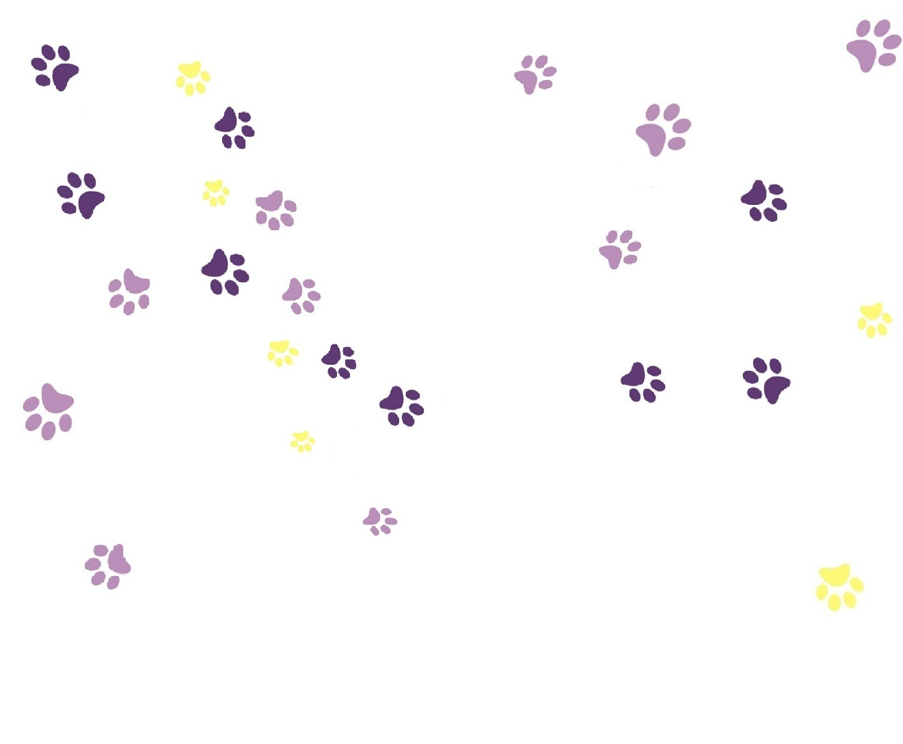

Adotei,
e agora?


Os cuidados básicos garantem que seu novo pet se sinta confortável e saudável no novo lar. Monte um espaço aconchegante com uma caminha, tigelas de água e comida sempre limpas, e brinquedos para manter seu animalzinho entretido. A higiene também é fundamental: escove-o regularmente, corte as unhas e, no caso de cães e gatos, garanta banhos periódicos.
A alimentação do seu pet deve ser balanceada e adequada ao porte e idade do animal. Consulte um veterinário para escolher a melhor ração, e mantenha sempre água fresca à disposição. Evite oferecer alimentos humanos, como chocolate, cebola e uvas, que são tóxicos para eles. Alimente seu pet em horários regulares e na quantidade recomendada, evitando o sobrepeso.
A adaptação do seu novo pet pode levar tempo, então seja paciente. Prepare um cantinho tranquilo para que ele se sinta seguro. Apresente o novo ambiente aos poucos, principalmente se já houver outros animais na casa. Dê tempo para que ele se acostume com novos sons, cheiros e pessoas. Recompense comportamentos tranquilos com carinho e petiscos.
A vacinação é essencial para garantir a saúde do seu pet e prevenir doenças graves. Para cães, as vacinas mais comuns são a antirrábica, V8 ou V10, enquanto gatos devem ser vacinados com a V4 e antirrábica. Consulte seu veterinário para criar um calendário de vacinas adequado, que deve ser seguido à risca, especialmente nos primeiros meses de vida do animal.